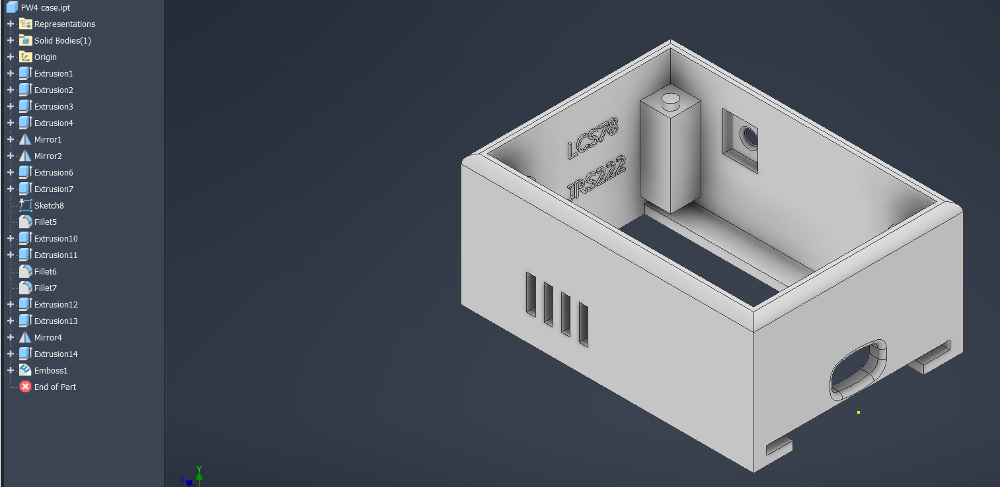
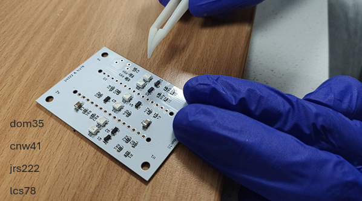
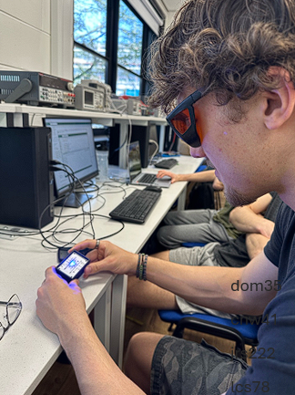
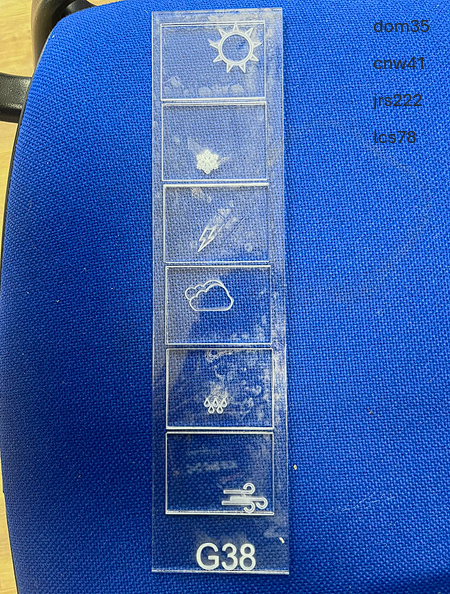

Acrylic Weather Display
Introduction
This page showcases the development process of an Acrylic Weather Display
Case


Case Drawing
Tools used to design the case
I used three main categories of CAD tools: Create, Modify, and Pattern to develop the enclosure.
Create:
Extrusion tools were used to form the main body of the case by creating a hollow rectangular enclosure from a base sketch. Additional extrusions were used to create internal features such as the mounting pillar. Cut extrusions were also applied to produce functional features including the ventilation slots, cable openings, and button cut-out
Modify:
Fillet tools were used to round external and internal edges, improving both the aesthetics and structural integrity of the case while also making it more suitable for 3D printing. Fillets were also used for the USB-C hole to help guide the cable in when inserted. The emboss tool was used to add engraved text onto the inner wall of the enclosure.
Pattern:
The mirror tool was used to replicate symmetrical features across the case, such as duplicating the vent hole cut-outs using a rectangular pattern, and the 4 mounting pillars using two mirrors. This ensured consistency in the design while reducing the amount of manual modelling required. Patterning also helped maintain even spacing and alignment of repeated features like the ventilation slots.
Slicing Reflection
The main body of the case was positioned with its base on the print bed, providing a stable foundation for the print. This was also chosen to ensure the walls all had the same print quality making it appear more visually consistent.
The lid was printed separately in a vertical orientation to preserve the sharpness of its edges and ensure a clean mating surface with the main enclosure. This orientation also minimised visible layer lines on the front-facing surface.
Several features, including the side cut-out and internal overhangs, introduce 90° overhangs, which cannot be printed reliably without support. As a result, support structures were generated from the build plate to sustain these regions. These supports extend into the internal cavity of the enclosure, particularly around the central opening and connector cut-outs, ensuring that these features maintain their intended geometry during printing.
Additive Manufacturing

CAD Reflections
Using CAD to Produce 3D Parts
The CAD process was effective in producing a functional enclosure with consistent dimensions, using parametric sketches and pattern tools to speed up development. However, some features were not initially designed with manufacturing constraints in mind, particularly internal overhangs that required support during printing. This increased post-processing time. In future, I would improve this by considering additive manufacturing limitations earlier in the design stage, such as minimising unsupported overhangs and incorporating self-supporting geometries.
Using CAD to Produce Drawings
Technical drawings were successfully generated to communicate the design, including key dimensions and views, improving clarity and allowing the part to be understood without the 3D model. Tolerances were later added to improve manufacturability; however, defining appropriate tolerance values proved challenging due to limited validation against real manufacturing constraints and fit requirements. As a result, some tolerances may not be fully optimised for the intended application. In future, this could be improved by testing physical prototypes and using standard engineering tolerance guidelines to better justify and refine these values.
Additive Manufacturing
The additive manufacturing process successfully produced a functional enclosure with acceptable surface finish and dimensional accuracy. Print orientation choices ensured structural stability and consistent external quality. However, the design required significant support material, particularly in internal regions, increasing material usage and post-processing effort. In future, I would improve this by optimising the design for additive manufacturing, reducing overhangs and designing features that minimise the need for supports.
Jab 1

Jab 2

Jab 3

Jab 1 Caption
Project week is well underway. Day 1 commences with the assembly of our PCB by Cai and Jonny. We’re all excited to see where this will take us and we may learn.
Jab 3 Caption
The acrylic sheets designed by Dom have arrived and they’re looking fantastic! Now it’s time to bring everything together.
Jab 2 Caption
A showcase of our system so far. Cai is taking safety precaution by using dimming glasses. Liams new 3D printed casing is amazing!
Right Hook
Jab 2 Caption
This is engineering.
Design it. Build it. Bring it to life.
Study Engineering at the University of Bath!!
Aim of the social media campaign
The aim of this social media campaign was to promote engineering as an engaging, creative, and hands-on discipline to a target audience of prospective students, particularly those considering university courses. The posts were designed to highlight the full design process, from initial PCB assembly to final system integration, allowing viewers to see how ideas are transformed into real, functioning products. Visual content, including progress updates and demonstrations, was used to maintain engagement and showcase tangible outcomes, making the subject more accessible and appealing.
The campaign also aimed to emphasise the collaborative and practical nature of engineering through team-based activities and real-world problem solving. Clear, concise captions and a strong call to action were included to encourage viewers to consider studying engineering, specifically at the University of Bath. Overall, the desired outcome was to inspire interest in engineering and demonstrate the opportunities it offers.
Social Media Communications Reflection
The social media campaign demonstrated effective synthesis by combining technical project work with communication strategies to engage a specific audience. Engineering concepts were translated into accessible visual content, allowing complex processes to be clearly understood by prospective students. This required integrating design, teamwork, and presentation skills to produce a coherent narrative across posts. However, some content could have been more targeted to audience interests to maximise engagement. In future, I would refine this by tailoring posts more specifically and incorporating feedback to improve clarity and impact.
Inclusive Teamwork: Skill Matrix

Inclusive Teamwork
1) Teamwork operation
Our team carried out most of the work in person, which allowed for direct collaboration and quicker problem-solving. We discussed ideas, divided tasks, and reviewed progress together during these sessions. To support this, we used a WhatsApp group for communication outside of meetings, mainly to organise meet-up times and share quick updates such as screenshots or minor issues. This combination of face-to-face work and online communication helped maintain consistent engagement and ensured everyone stayed informed and involved throughout the project.
2) Process for bystander intervention
We established a clear expectation that all team members were responsible for speaking up if they noticed inappropriate behaviour or exclusion. This was supported by creating an open environment where concerns could be raised without judgement. During meetings, we encouraged everyone to challenge ideas respectfully and check in if someone seemed uncomfortable or disengaged. This process helped ensure that issues were addressed early and that all members felt supported in maintaining a respectful and inclusive team dynamic.
3) Protected characteristics considered
While working on the project, we considered several protected characteristics, including gender, race, and disability. We ensured that communication and task allocation did not disadvantage any individual and that all team members had equal opportunities to contribute. For example, we were mindful of different confidence levels and communication styles, making sure quieter members were given space to share their ideas. This approach helped create a fair and supportive working environment for everyone involved.
4) Two processes for inclusive communication
Firstly, we used structured turn-taking during meetings to ensure that everyone had an opportunity to speak and contribute their ideas. This prevented dominant voices from overshadowing others. Secondly, we shared written summaries of discussions and decisions after meetings. This ensured that all team members, including those who may have missed a meeting or needed more time to process information, could stay informed and engaged with the project.
5) Why these processes enhance inclusivity
These processes enhance inclusivity by ensuring that all team members have equal opportunities to participate and feel valued. Structured turn-taking reduces the risk of individuals being overlooked, while written summaries improve accessibility and clarity. Together, they create an environment where communication is transparent and respectful. This not only improves collaboration but also helps build confidence among team members, leading to more effective teamwork and better overall project outcomes.
Risk Assessment
Risk Assessment
Project Management
Project Management
The project was divided into four main objectives to ensure a structured development process. First, the PCB system was designed, including schematic creation, layout verification, manufacturing, assembly, and testing. Next, software was developed to control the lighting behaviour for different weather states. In parallel, acrylic visual components were designed, laser cut, and integrated with the electronics. Finally, the full product was modelled in CAD, including casing design and technical drawings. This staged approach allowed electrical, software, and mechanical elements to be developed systematically and integrated effectively.
Effective Time Management: Gantt Chart

Management Reflections
Effective Project Management
Project management was successful in structuring the development process into clear stages, allowing different aspects of the project to be completed systematically. This helped ensure steady progress and integration of components. However, some tasks took longer than expected due to underestimating complexity. In future, I would improve this by allocating more realistic time estimates and building in contingency time to better manage delays.
Effective Time Management
Time was managed effectively by breaking the project into smaller tasks and using a Gantt chart to plan and track progress. This helped ensure that key milestones were identified and generally met throughout the project. However, the schedule did not account for sufficient contingency or float time, meaning that when delays occurred, particularly during testing and integration, they impacted later tasks. In future, this could be improved by incorporating buffer time into the Gantt chart and allowing flexibility between dependent tasks to better manage uncertainty and reduce the impact of delays.
Risk Assessment
The risk assessment successfully identified key hazards, including electrical, thermal, and manufacturing risks, helping to ensure safe working practices throughout the project. However, some risks were initially described in a general way without detailed likelihood or severity analysis. In future, I would improve this by quantifying risks more clearly and updating the assessment dynamically as the project develops.
Inclusive Teamwork
Teamwork was effective, with clear communication and collaboration both in person and through online messaging. This ensured that tasks were completed efficiently and that all members remained engaged. However, some individuals contributed more than others at times, leading to slight imbalance in workload. In future, I would improve this by allocating tasks more evenly and regularly reviewing contributions to ensure balanced participation.
Datasheet Creation
Datasheet Creation Reflection
The datasheet effectively summarised the key specifications and functionality of the product, presenting information in a clear and structured format. This improved the professionalism of the project documentation. However, some sections lacked detailed technical justification and deeper explanation of design decisions. In future, I would improve this by including more detailed specifications, performance data, and justification to make the datasheet more comprehensive and technically rigorous.
Climate and sustainability Impact of electronics devices
 1) Sustainability framework
1) Sustainability framework
A relevant sustainability framework for this project is United Nations Sustainable Development Goal 7: Affordable and Clean Energy. This goal focuses on improving energy efficiency and reducing unnecessary energy consumption. The acrylic weather display aligns with this by using low-power electronic components such as LEDs and a microcontroller, which consume significantly less energy compared to traditional display systems. By designing the system to operate efficiently, the project supports the wider aim of reducing energy demand and promoting sustainable use of electricity.
2) Electronic system & sustainability
The system operates using a microcontroller that retrieves weather data from an external API rather than relying on onboard sensors. The microcontroller processes this data and controls the LED illumination within the acrylic display. Sustainability is enhanced by limiting how often the system requests data, as it only checks the API periodically instead of continuously. This reduces power consumption associated with wireless communication, which is typically one of the most energy-intensive operations in embedded systems. Combined with low-power LEDs and efficient processing, this approach minimises overall energy usage.
3) Overall impact on sustainability
The acrylic weather display has both positive and negative impacts on sustainability. On the positive side, the system uses energy-efficient components such as LEDs and low-power microcontrollers, which reduce electricity consumption during operation. The use of digital display also eliminates the need for printed materials, reducing paper waste over time. However, there are less sustainable aspects of the project. The use of acrylic, which is a plastic material, has environmental drawbacks as it is derived from non-renewable resources and is not easily biodegradable. Additionally, electronic components contribute to e-waste if not properly recycled at the end of the product’s life cycle. Despite these drawbacks, the overall design can still be considered partially sustainable if efforts are made to extend the product’s lifespan, minimise waste during manufacturing, and dispose of components responsibly. This balanced approach demonstrates consideration of sustainability throughout the project lifecycle.
Life cycle assessment of electronics devices
1) Birth of the product
The acrylic weather display is composed of PMMA (acrylic), a microcontroller (e.g. ESP32/Arduino-class), LEDs, and a PCB. Acrylic production has an estimated carbon footprint of ~5.5 kg CO2 per kg of material, due to petroleum extraction and high-temperature polymerisation processes [1]. Assuming ~150g of acrylic is used across the 6 sheets, this contributes ~0.8 kg CO2.
Electronic components contribute significantly to the overall carbon footprint. Printed circuit board (PCB) production is estimated to contribute approximately 1–3 kg CO2 per board, primarily due to copper extraction, chemical etching, and high-temperature processing [2]. In addition, semiconductor fabrication is highly energy-intensive, requiring cleanroom environments, photolithography, and multiple processing stages, which further increases the embodied carbon of the electronic system [3]. Although exact values for individual microcontrollers vary, these processes are widely recognised as major contributors to the environmental impact of electronic devices.
Overall, the manufacturing phase is estimated to contribute ~6–8 kg CO2, making it the dominant stage in the product lifecycle.
2) Life of the product
During operation, the device consumes relatively low power. The system runs on approximately 3–6 W, including LEDs and the microcontroller. Assuming 5 W operation for 6 hours per day, annual energy consumption is:
- 5W × 6h × 365 ≈ 11kWh/year
Using a UK grid average of ~0.129 kg CO2 per kWh [4], this results in:
- ~1.4 kg CO2 per year
Sustainability is improved by periodic API calls rather than continuous data transmission, reducing Wi-Fi usage, which is one of the most energy-intensive processes in embedded systems. Over a typical 3-year lifespan, the use phase contributes approximately 4-5 kg CO2, comparable to manufacturing impact.
3) End of life
At end of life, the product contributes to electronic and plastic waste. Acrylic (PMMA) is technically recyclable through mechanical and chemical processes; however, in practice recycling rates remain limited due to collection and contamination challenges [5]. As a result, some acrylic components may still be disposed of in landfill.
Electronic components require specialised recycling processes to recover valuable materials such as copper and gold. Recycling PCBs can recover up to 90% of metals, reducing the need for raw material extraction [6]. However, these processes themselves require energy, contributing approximately 1–2 kg CO2 per device.
The environmental impact of this stage is partially mitigated by the product’s design, which allows separation of materials and reduces unnecessary disposal of functional components.
4) Reducing e-waste + quantified impact
A key improvement of the design is its modular architecture, allowing individual components to be replaced without discarding the entire product. The system is composed of a 3D printed enclosure, a removable PCB, and multiple acrylic display layers, all of which can be independently accessed and replaced.
If a failure occurs, such as a damaged acrylic display segment or a faulty LED on the PCB, only the affected component needs to be replaced. The acrylic sheets can be individually removed and re-cut, while the PCB can be swapped without affecting the enclosure. This significantly reduces both material waste and electronic waste compared to fully integrated designs.
Assuming the full device has a manufacturing footprint of approximately 8 kg CO₂, with ~6 kg attributed to electronics and ~2 kg to structural and acrylic components, replacing only a single failed element reduces emissions substantially.
Estimated CO2 Reduction
| Scenario | CO₂ Impact |
|---|---|
| Full device replacement | 8 kg CO₂ |
| PCB-only replacement | 6 kg CO₂ |
| Single acrylic layer replacement | ~0.15 kg CO₂ |
This demonstrates that the ability to replace individual acrylic layers and electronic components can reduce repair-related emissions by over 90% in some cases. Therefore, modular design is a highly effective strategy for reducing e-waste and improving overall sustainability.
References
[1] A. I. Totaro. “The Unsustainable Prevalence of Plexiglass.” Renewable Matter. Accessed: 29-Apr-2026. [Online]. Available: https://www.renewablematter.eu/en/the-unsustainable-prevalence-of-plexiglass
[2] S. Boyd, “Life-Cycle Assessment of Printed Circuit Boards,” Journal of Cleaner Production, vol. 19, no. 13, pp. 1433–1441, 2011. [Online]. Available: https://www.sciencedirect.com/science/article/pii/S095965261100093X. [Accessed: 29-Apr-2026].
[3] L. Chamness, “Global Semiconductor Carbon Emissions Forecast, 2025–2030,” TechInsights, Dec. 2024. Accessed: Apr. 29, 2026. [Online]. Available: https://library.techinsights.com/public/hg-asset/1a965735-48b8-43a0-8ebd-7b5b8f048db5
[4] J. Le Van, “Understanding the UK grid carbon emissions data.” Hoare Lea. Accessed: Apr. 29, 2026. [Online]. Available: https://hoarelea.com/2026/02/25/uk-grid-carbon-emissions-data/
[5] Plastic Expert, “PMMA (Acrylic) Recycling.” Accessed: Apr. 29, 2026. [Online]. Available: https://www.plasticexpert.co.uk/plastic-recycling/pmma-acrylic-recycling/
[6] W. M. Ashraf, R. Panda, P. R. Jadhao, K. K. Pant, and V. Dua, “Sustainable recovery of Cu, Ag and Au from the waste printed circuit boards and process optimisation by machine learning,” Computers & Chemical Engineering, vol. 201, p. 109237, Oct. 2025, doi: https://doi.org/10.1016/j.compchemeng.2025.109237.
Sustainability Reflections
Sustainability Impact of Electronic Devices
The project demonstrated consideration of sustainability through the use of low-power components and efficient operation, particularly by limiting API calls to reduce energy consumption. However, the use of acrylic and electronic components introduces environmental concerns, including non-biodegradable materials and e-waste. In future, I would improve this by selecting more sustainable materials where possible and designing the product for easier disassembly and recycling to reduce environmental impact.
Life Cycle Assessment of Electronic Devices
The life cycle assessment combined material, manufacturing, and usage data to evaluate the environmental impact of the device. Quantitative estimates showed that both manufacturing and operation contribute significantly to total emissions. A key strength was linking these impacts to design decisions, such as reducing power use through periodic API calls and minimising e-waste via a modular design. However, some estimates, particularly for semiconductor fabrication, remain approximate due to limited data. In future, more precise component-level data or LCA tools would improve accuracy and reliability.
Engineering problem solving processes
Engineering problem solving processes
I contributed to the verification and validation stage by carrying out all tests labelled under my name. This included measuring LED brightness with a lux meter, checking voltage levels across components for safety, and recording power consumption using a USB power meter. Through this, I ensured the design met key specifications such as safe operation. All my tests passed the expected completion rate and no further action was needed.
Engineering Problem Solving Processes Reflection
Problem-solving was effective throughout the project, particularly when addressing integration challenges between mechanical, electrical, and software components. Iterative testing and modification allowed issues to be identified and resolved efficiently. However, some problems were addressed reactively rather than being anticipated earlier in the design process. In future, I would improve this by applying more structured planning and risk analysis at earlier stages to reduce the need for later adjustments.
GenAI Acknowledgement Statement
GenAI was not used in the preparation of this assignment.
Skills Claimed
- Using CAD to produce 3D parts — claimed at I am claiming this skill at SynthesisPlace feedbackCloseFeedback - Annotation: Using CAD to produce 3D partsClosePlace feedback
- Using CAD to produce drawings — claimed at I am claiming this skill at SynthesisPlace feedbackCloseFeedback - Annotation: Using CAD to produce drawingsClosePlace feedback
- Additive manufacturing — claimed at I am claiming this skill at SynthesisPlace feedbackCloseFeedback - Annotation: Additive manufacturingClosePlace feedback
- Sustainability impact of electronics devices — claimed at I am claiming this skill at SynthesisPlace feedbackCloseFeedback - Annotation: Sustainability impact of electronics devicesClosePlace feedback
- Life cycle assessment of electronic devices — claimed at I am claiming this skill at SynthesisPlace feedbackCloseFeedback - Annotation: Life cycle assessment of electronic devicesClosePlace feedback
- Engineering Problem solving processes — claimed at I am claiming this skill at SynthesisPlace feedbackCloseFeedback - Annotation: Engineering Problem solving processesClosePlace feedback
- Social media communication — claimed at I am claiming this skill at SynthesisPlace feedbackCloseFeedback - Annotation: Social media communicationClosePlace feedback
- Datasheet creation — claimed at I am claiming this skill at SynthesisPlace feedbackCloseFeedback - Annotation: Datasheet creationClosePlace feedback
- Effective project management — claimed at I am claiming this skill at SynthesisPlace feedbackCloseFeedback - Annotation: Effective project managementClosePlace feedback
- Effective time management — claimed at I am claiming this skill at SynthesisPlace feedbackCloseFeedback - Annotation: Effective time managementClosePlace feedback
- Risk assessment — claimed at I am claiming this skill at SynthesisPlace feedbackCloseFeedback - Annotation: Risk assessmentClosePlace feedback
- Inclusive Teamwork — claimed at I am claiming this skill at SynthesisPlace feedbackCloseFeedback - Annotation: Inclusive TeamworkClosePlace feedback
- Online and library research, referencing & avoiding plagiarism — claimed at I am claiming this skill at ApplicationPlace feedbackCloseFeedback - Annotation: Online and library research, referencing & avoiding plagiarismClosePlace feedback